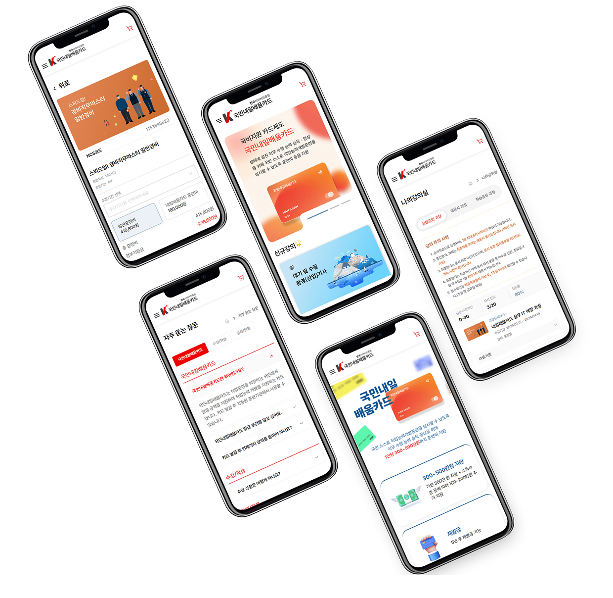
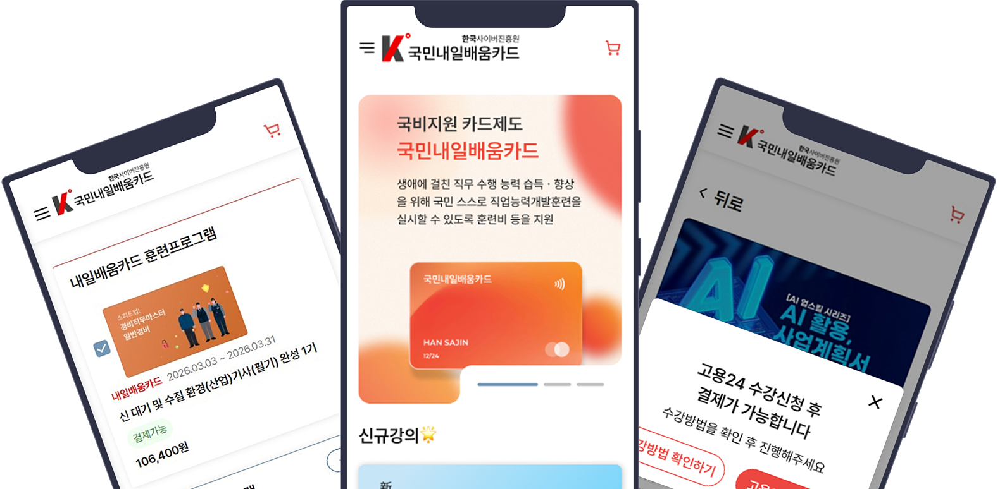
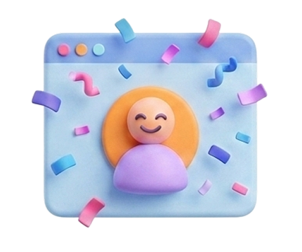
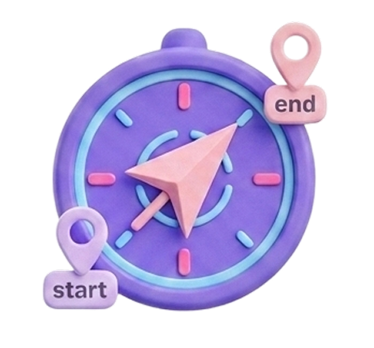
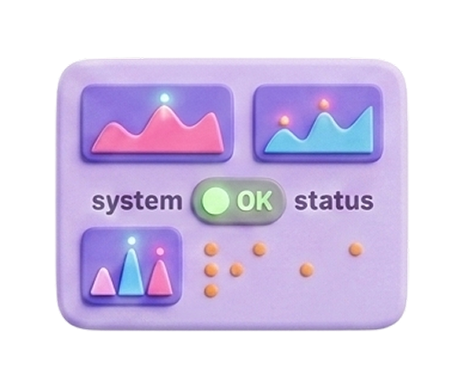
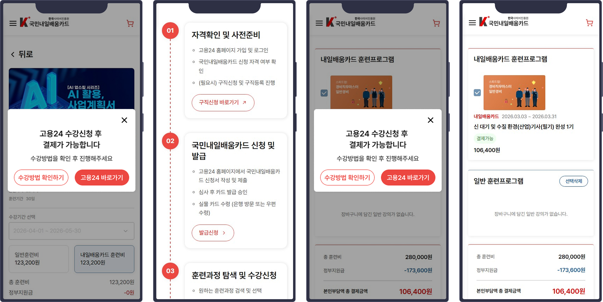

-

Figma Variables
색상·간격·타이포 토큰을 변수로 정의.
-

JSON / MD 규격
AI에게 디자인 시스템과 규칙 주입.
-

AI 규칙서 제작
디자인과 시스템을 바탕으로 AI용 디자인/퍼블리싱 규칙서 제작.
-

검수/수정
디자인/퍼블리싱 자동화 및 검수/수정
B2C
AI Workflow
UX/UI Design
내일배움카드
AI 워크플로우 수립과 국비 지원 내일배움카드 UX/UI 최적화

메인페이지와 디자인시스템을 기반으로 규칙화하여 AI 워크플로우 설계


유사서비스 사례 및 내일배움카드서비스 문제점분석

패스트캠퍼스
GOOD
압도적인 커리큘럼 라이브러리, 실무 밀착형 과제, 직관적인 강의 목차 구성, 강력한 영상 플레이어
BAD
강사나 콘텐츠의 최신성, 강의 자료를 다운로드하는 경로가 강의마다 다름, 대시보드의 복잡도

코드잇
GOOD
맥북 무상대여 등 업무환경 인프라, 세분화된 커리큘럼, 멘토링서비스, 게임 스테이지를 깨는 듯한 사용자 경험을 제공
BAD
상대적으로 긴 교육 기간, 비개발 직군 다양성 부족, 심화 학습 인터페이스 부재

스파르타코딩클럽
GOOD
강력한 관리 시스템, 현직자 튜터의 실시간 케어, 심플한 진행 가이드
BAD
4개 플랫폼 분산으로 인한 혼선, 모바일 최적화 미흡
내일배움카드 서비스 문제점
- 고용24/민간서비스 이원화된 신청플로우
- 다중 플랫폼 이용에 따른 데이터 동기화 지연 및 상태인식 어려움
내일배움카드 서비스 문제점을 보완하는 가이드 설계
이원화된 신청 플로우와 데이터 동기화 지연 문제를 사용자 안내 UX로 보완.


서비스 확장에 따른 신규 타겟층 목표
자기계발에 즐거움을 찾는 MZ 직장인의 학습의 즐거움과 편리함을 담은 액티브하고 유연한 비주얼 전략 수립.

이원화된 신청 플로우를 위한 안내
고용24사이트와 자사서비스를 오가는 이원화된 신청플로우로 인한 혼선을, 지속적인 안내로 혼선 방지.

데이터 동기화 지연
두 플랫폼 사이의 데이터 지연을 결제상태 배지로 사용자에게 알려 진행상태를 파악하게 함.
Target mood
자기개발의 즐거움을 담은 액티브하고 친근한 무드
친근한 인터페이스
딱딱한 B2B브랜드 이미지를 탈피하기 위해 부드러운 곡선 UI 적용. 생활 밀착형 서비스로서의 친근한 사용 경험을 선사.
배우는 즐거움의 컬러
사용자에게 자기계발의 설렘과 학습의 즐거움을 경쾌하고 활기찬 무드로 보여줌.

AI를 이용한 사용자 여정 및 결제로직 플로우 설계
자사 사이트와 고용24를 오가는 불연속적인 결제 프로세스의 로직 설계.

사용자 여정
자사
강의선택
자사
장바구니
결제대기
고용24
수강등록
자사
장바구니
결제가능
자사
결제
유의사항 안내
완료
수강
결제 로직 플로우
기획자가 없는 환경에서 AI 결재로직을 설계하여 웹사이트 플로우를 구축하여 개발진행. 개발 방향을 사전에 확정하여 중도 수정을 최소화.
01. 신청
WAITING_SYNC
UI 인터랙션
1. [장바구니버튼 클릭]장바구니 이동 안내 모달
2. [결제버튼클릭]고용24 신청 방법 안내 모달
시스템 로직
강의페이지 [장바구니담기] 버튼 클릭 → 장바구니 데이터 전송
02. 대기
WAITING_SYNC
UI 인터랙션
1. 결제대기 스테이트 표시
2. [결제버튼클릭]고용24 신청 방법 안내 모달
시스템 로직
시스템이 해당 강의의 결제 권한을 비활성 처리
03. 매칭
SYNC_SUCCESS
UI 인터랙션
1. 데이터 업데이트
2. 사용자 화면 변화 없음
시스템 로직
[Admin]관리자가 고용24 리스트 업로드 → 과정(ncs code) 기반 데이터 매핑
04. 활성
SYNC_SUCCESS
UI 인터랙션
1. 결제가능 스테이트 표시
시스템 로직
1. [Trigger]페이지 새로고침 또는 장바구니 재진입 시 상태값 호출
2. 결제 권한을 활성 처리
05. 완료
ENROLLED
UI 인터랙션
1. 나의 강의실 학습 컨텐츠 생성
2. 마이페이지 수강신청내역 생성
시스템 로직
PG사 결제 승인 완료 → DB 상태 전이
Design-to-Code AI 자동화
메인 디자인을 기반으로 Figma Variables을 토큰화하고,
AI에게 JSON/MD 규격을 학습시켜 디자인/퍼블리싱 제작 시간을 단축.


25% 제작공수 단축
디자인 토큰과 AI를 이용해 'Design-to-Code' 파이프라인을 구축, 수동 코딩 대비 제작 공수를 25% 단축.
기획의 공백을 메운 데이터 상태 설계
사용자여정과 결제 로직 플로우를 설계하여 복잡한 외부 기관 연동 프로세스에서 발생할 수 있는 문제를 최소화.
2040 신규 타겟 유입
액티브한 리브랜딩과 결제 로직 최적화를 통해 2040 신규 타겟의 유입 및 안정적 정착에 기여.